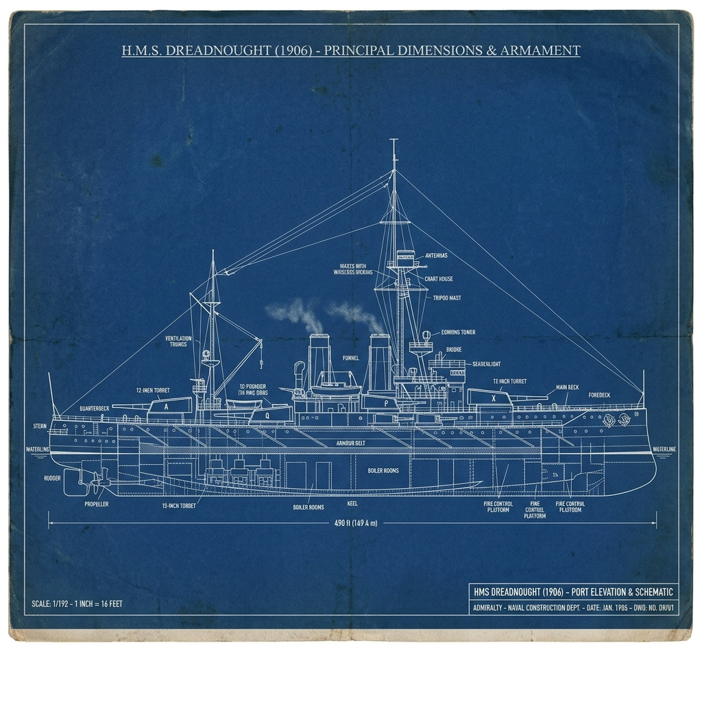
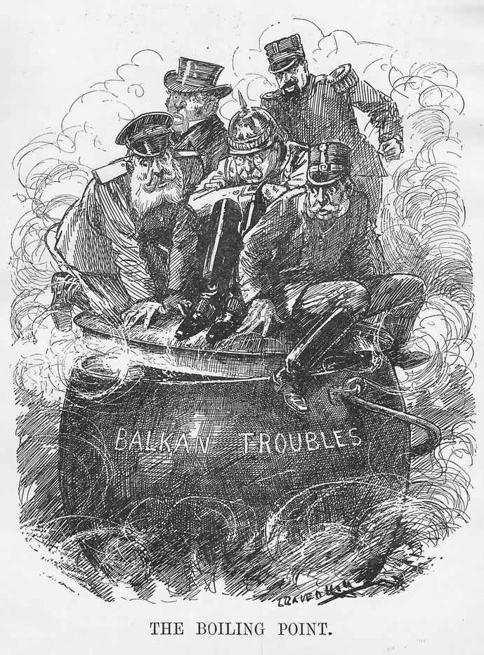

| Progress & Assessment Tracker | Effort | Level | Teacher Comments | |
|---|---|---|---|---|
| L1: How was the German Empire created in 1871? | ||||
| L2: How did the Franco-Prussian War create a lasting legacy of hatred? | ||||
| L3: To what extent did the 'Scramble for Africa' increase tension in Europe? | ||||
| L4: Why did a battleship building contest destroy Anglo-German relations? | ||||
| L5: Did the Alliance System protect Europe or guarantee a global war? | ||||
| L6: Why did a single assassination in Sarajevo ignite a World War? | ||||
| Assessment: Assessment Option 1: The July Crisis Domino Flowchart | ||||
| Assessment: Assessment Option 2: The M.A.I.N. Significance Diamond | ||||
| Assessment: Assessment Option 3: Source Utility Analysis | ||||
| Assessment: Assessment Option 4: The Historians' Debate | ||||
| Final Unit Grade: |
Q2. Interpreting 'Blood and Iron'. In your own words, explain what Otto von Bismarck meant when he said Germany would be united by 'blood and iron'. How did Prussia use its industrial and military power to prove Bismarck’s speech right between 1864 and 1871?
Q3. The Steps to Unification. Create a three-step staircase diagram in your book to show how Bismarck built the German Empire. For each step, write down: 1. The name of the country Prussia defeated. 2. The year of the war. 3. How this war helped Prussia achieve its ultimate goal of unification.
Q4. undefined
Use the space below to summarize the most important knowledge from this lesson, or answer your teacher's assessment question.

Task: The historical events below are out of order. Read them carefully, then use your pen to draw arrows connecting the boxes in the correct chronological and causal order (Event A ➔ Event B ➔ Event C...).
Write a historically accurate sentence connecting two terms from the glossary box below.
Q3. To what extent did the maps of central Europe fundamentally change prior to 1871? Use the term "North German Confederation" in your answer.
Q4. Describe the diplomatic trick Chancellor Otto von Bismarck used to manufacture a war with France in 1870.
Q5. Identify two distinct military advantages that allowed the Prussian-led German army to quickly defeat the conventional French forces.
Q6. List the three severe penalties forced upon France by the victorious German Empire in the 1871 peace treaty.
Q7. Explain why the loss of Alsace-Lorraine and the ceremony at Versailles created a long-term "nightmare" for European peace.
Prompt: Of the three penalties forced upon France in the 1871 treaty (loss of land, 5 billion franc fine, German occupation), which do you think caused the most bitter resentment, and why?
Think: Jot down your choice and one strong reason to support it.
the reasons for French hatred of Germany after 1871
“We must never forget the humiliation of 1871. The German Empire was proclaimed in our own Palace of Versailles, tearing away the bleeding wounds of Alsace and Lorraine. They have stolen our iron and our factories, and forced us to pay a crushing ransom of 5 billion francs. Every French child must grow up with one single thought: to rebuild our army and take back what was stolen from the motherland.”
Source A: Adapted from a French school textbook, published in Paris, 1885.
“France will never forgive us for taking Alsace-Lorraine. The peace we have forced upon them has left a bitter resentment that will not fade. We must accept that a French war of revenge is a certainty in the future. Therefore, our entire diplomatic focus must be to ensure she never finds an ally to help her take it back. As long as France remains diplomatically isolated, particularly from Russia, Germany will remain secure.”
Source B: Adapted from a private letter written by German Chancellor Otto von Bismarck to a fellow diplomat, 1872.

Write a clear definition and a historically accurate sentence for the term: Imperialism
Q3. Explain two distinct economic reasons why possessing overseas colonies was vital to the industrial growth of a Great Power.
Q4. Why did French politicians feel it was absolutely vital to maintain a firm hold on their remaining global colonies after 1871?
Q5. Explain how Germany’s sudden desire to build a naval fleet to protect its new colonies acted as a cause of friction with Great Britain.
Q6. What specific geographical territory did Foreign Secretary Bernhard von Bülow target when he demanded a "place in the sun" for Germany? (P3 & P4)
Prompt: If you were a British politician in 1897, would you view Kaiser Wilhelm's 'Place in the Sun' speech as a direct threat, or just a young leader showing off? Why?
Think: Jot down your view and one piece of evidence.
the impact of Weltpolitik on international relations
Source A: A British political cartoon from 1897 showing Kaiser Wilhelm II.
“We do not want to put anyone in the shade, but we too demand our place in the sun.”
Source B: Speech by German Foreign Minister Bernhard von Bülow to the Reichstag, 1897.

Fill in the blanks using the vocabulary words below.
Britain's traditional __________________ was challenged when Germany began a rapid naval buildup. This sparked a fierce __________________ between the two nations. Britain relied on the __________________ to maintain a massive fleet, but the invention of the heavily-armed __________________ battleship reset the competition.
Q3. Describe the 'Two-Power Standard' and explain why Great Britain adhered to this strict naval policy.
Q4. Detail what the German Navy Laws of 1898 and 1900 explicitly ordered the German industrial shipyards to construct.
Q5. Explain how Admiral Tirpitz used the Navy League to manufacture civilian support and patriotism for Germany's expanding fleet.
Q6. Explain why maintaining a massive navy was a matter of survival for Great Britain, but was viewed as a matter of status and power for Germany. (P1 & P2)
Q7. Identify three specific technological features of HMS Dreadnought that made it superior to all previous warships.
Q8. Explain how the launching of HMS Dreadnought in 1906 represented an industrial turning point in the naval arms race, rather than maintaining the status quo. (P4 & P8)
Prompt: Who do you think was more to blame for the naval arms race: Germany for building a fleet they didn't strictly need, or Britain for refusing to share control of the seas?
Think: Decide who is more to blame and write down your main reason.
the effects of the Anglo-German naval arms race
Source A: Official technical blueprint of HMS Dreadnought, 1906.
“We want eight, and we won't wait!”
Source B: Popular British political slogan chanted by the public in 1909.

Write a historically accurate sentence connecting two terms from the glossary box below.
Q4. Identify the specific member countries that made up the Triple Alliance and the Triple Entente by 1907.
Q5. Explain the diplomatic logic of how the alliance system was theoretically supposed to keep European nations safe from a outbreak of war.
Q6. According to Germany's military leaders, explain why a European war was considered "inevitable and necessary" rather than avoidable.
Q7. Detail how the massive expansion of steel production and railway tracks across Europe altered the speed and scale of army mobilization.
Q8. Explain how the transformation of Europe into two "armed camps" by 1914 represented a dangerous change in international relations compared to the traditional balance of power.
Prompt: Imagine you are an ordinary Serbian citizen in 1908. Why would Austria-Hungary's aggressive takeover of Bosnia make you feel personally threatened?
Think: Write down how you would feel and why.
the threat posed by Serbia to Austria-Hungary

Source A: Map of the Balkans showing the expansion of Serbia after 1913.
“Serbia is a viper that must be crushed. If we do not destroy them now, our empire will be torn apart by Slavic nationalism.”
Source B: Diary entry of the Austro-Hungarian Chief of Staff, Conrad von Hötzendorf, 1913.

Write a clear definition and a historically accurate sentence for the term: Assassination
Q3. Explain why the rise of independent Balkan states and Serbian nationalism represented a catastrophic nightmare for the Austro-Hungarian Empire.
Q4. Detail how the structural failure of the first bomb plot inadvertently led to the exact scenario where Gavrilo Princip was able to shoot the Archduke.
Q5. Outline the chronological sequence of events from July 23 to August 4, 1914, that transformed a local Balkan assassination into a total European war.
Q6. What does the desperate tone of the 'Willy-Nicky Telegrams' reveal about the monarchs' control over the escalating July Crisis?
Q7. Explain why it is historically inaccurate to describe the First World War strictly as a 'European' conflict in 1914.
Prompt: Look at the timeline of the July Crisis. At which exact moment do you think a world war became completely unstoppable? Was it the assassination, the blank cheque, or the mobilisations?
Think: Pick the specific turning point and write down why you chose it.
the causes of the outbreak of World War I
Source A: 'The Boiling Point', a British cartoon published in Punch Magazine, 1912.
“You may rest assured that His Majesty will faithfully stand by Austria-Hungary, as is required by the obligations of his alliance and of his ancient friendship.”
Source B: The 'Blank Cheque' telegram sent from Germany to Austria-Hungary, 5 July 1914.